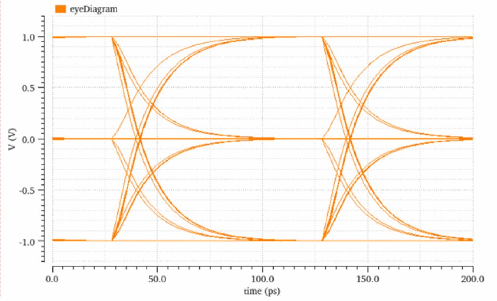
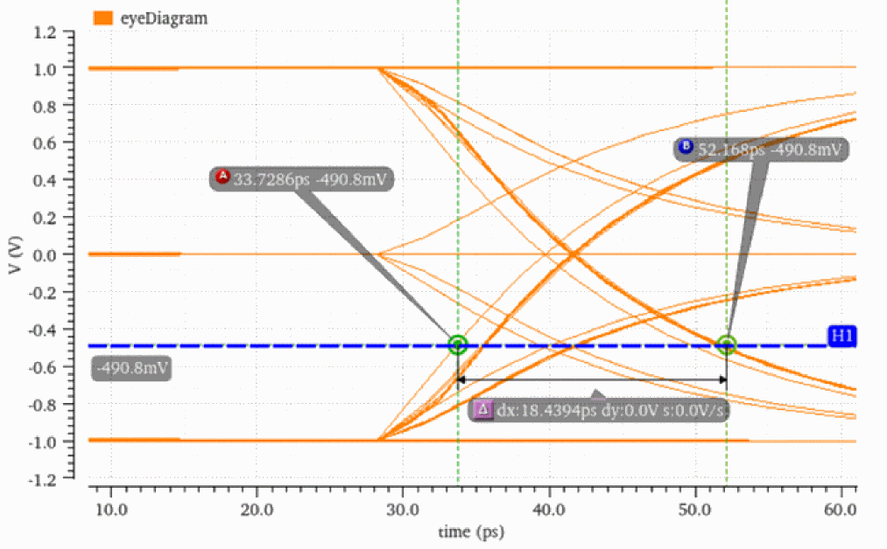

eyePeakToPeakJitter
eyePeakToPeakJitter(o_eyeDiagram f_threshold n_eyeStart n_eyeEnd) =>x_p2pJitter/ nil
Description
Calculates the peak-to-peak jitter at the specified threshold within the region of an eye diagram. The peak-to-peak jitter is the time between the first and the last crossing.
Arguments
|
Crossing threshold at which the peak-to-peak jitter is calculated |
|
Value Returned
|
Peak-to-peak jitter at the specified threshold within the region of an eye diagram. |
|
|
Peak-to-peak jitter cannot be calculated because of an error. |
Examples
The following example calculates the peak-to-peak jitter at the threshold value 0 for the eye diagram represented by the waveform object, eye.
openResults("./simulation/PAM3_Eye_Diagram/pam3_testbench/maestro/results/maestro/Interactive.13/psf/PAM3_Eye_Diagram_pam3_testbench_1/psf")
;Opens the simulation results stored in the specified directory.
=> "./simulation/PAM3_Eye_Diagram/pam3_testbench/maestro/results/maestro/Interactive.13/psf/PAM3_Eye_Diagram_pam3_testbench_1/psf"
results()
;Lists the results available in the specified results directory.
=> tran(tranOp model instance output designParamVals
primitives subckts variables
)
selectResults('tran)
;Selects the result tran from the list of available results
=> stdobj@0x3945fc50
outputs();
;Lists the outputs available in the selected result tran.
=> ("/out1" "V0.p" "/in1")
Vout=v("/out1")
;Created a waveform object Vout representing the waveform of the voltage signal for output out1.
=> srrWave:0x3e1ce020
awvCreatePlotWindow()
;Creates a Waveform window and returns its window ID
=> window:3
vvSetGraphBackground("#ffffff" awvGetCurrentWindow())
;Sets the background color of the current Waveform window to White.
=> (("graphWindow[1.1.1]")
(("viva.graphFrame.background" "#ffffff"))
)
eye=leafValue( eyeDiagram(Vout 0.0 1e-07 (2 * 1e-10) ?triggerPeriod 1e-10 ?autoCenter t) "trise1" "0.05*myUI" )
;Craetes a waveform object eye, representing the eye diagram created by applying eyeDiagram function on the Vout signal.
=> srrWave:0x3e1ce030
awvPlotWaveform(
window(3)
list(eye)
?expr list("eyeDiagram")
?color list("y6")
?index list(1)
)
;Plots the waveforms eye in the specified Waveform window.
=> t

eyePeakToPeakJitter(eye -490.8m 0 100p)
; Calculates the distance between the first (0p) and last crossing (100p)at the threshold value-490.8mVof the eye diagram represented by the waveform object,eye.
=> 1.844226e-11
The calculated value of peak-to-peak jitter can be verified by placing the A and B markers on the first and last crossing at the threshold value of -490.8mV. The distance between these two markers is 18.4ps.

Return to top